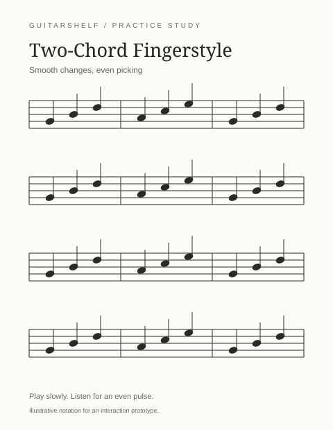

The collection
Browse sheet music
Small studies for steady progress. Open a piece, or save it to your demo library.
Four practice pieces
Original sample entries



Beginner / Standard + TAB
Two-Chord Fingerstyle
Practice smooth changes between two familiar chords.